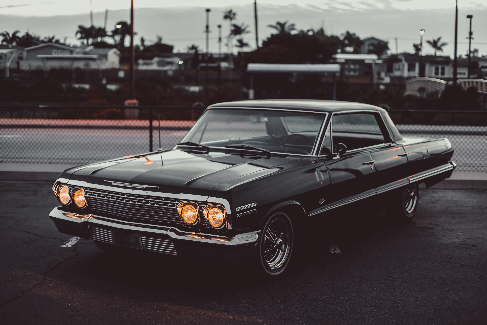
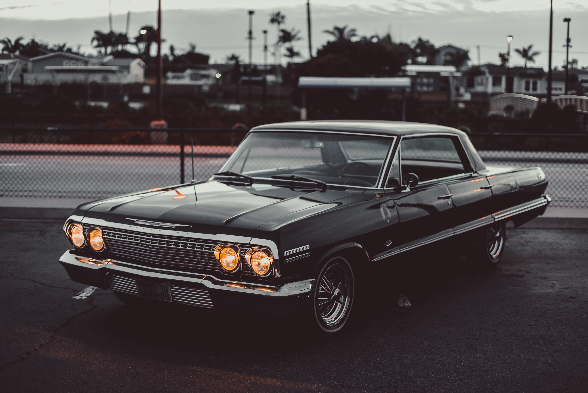

You have the car of your dreams. Perhaps, it is the one you first drove and found your freedom in or the one a few years later that really ignited your enthusiasm. You want to use this car as much as possible and compete against other. Vintage Car Rally, alongside a new venture, a pop up market featuring organic, fairtrade and/or local producers brought to Rhosygilwen by greenweeds.
An exhibition of organic Welsh wool crafts will on display in Ty Solar. The rally car is the ultimate real-world sports car that is able to withstand high speeds while maintaining incredible handling capabilities on any road surface and in every weather condition. Rallies for Vintage & Classic Cars … Following on from the stunning Carrera Italia in October, Rally the Globe is changing back up a gear in 2022 with three Classic and Vintage rallies on the continent.
There’s also the chance to reconnect with family on our Generations Rally. Vintage Car Rally, alongside a new venture, a pop up market featuring organic, fairtrade and/or local producers brought to Rhosygilwen by greenweeds. An exhibition of organic Welsh wool crafts will on display in Ty Solar.

 

A car rally fundraiser can be run in two different formats, each with differing levels of work required for their success. This format takes an incredible amount of work to ensure its success. A Multi-day Car Rally can be run similar to the famous “Bourke Bash”; stopping at country towns in dressed up cars that can help attract attention and fundraising along the route.
This format is much more manageable for clubs to undertake on their own. Club members and friends are encouraged to join forces in a car, travel to various destinations and undertake a variety of tasks. Points and prizes are awarded for the winners.
A Car Rally has a set course to navigate over a day with tasks to be completed at each checkpoint. Clues are picked up from checkpoints that will lead the driver and team to their next destination and task. Tasks and clues can be as creative as you like… Puzzles, flags, riddles.